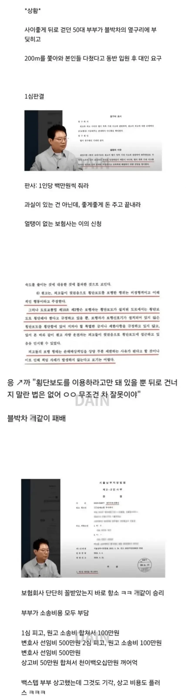

1. 그거 이해함
2. 이의 신청 기각은 변명이안됨 걍 애미가 듸진거임
나도 지금 소송진행중인데 ㅋㅋ
판례 보면 개판이긴 하더라고..
그럼 걍 ai돌리면 되는거아닐까? 지금부터 시작되는 재판 2개로 나눠서 양측 결과 비교해서 정확한쪽으로 대체하는게 맞는거같음. 사람은 피곤해하지만 ai는 과연 그럴까 싶음
그걸 사람들이 올바른 판결이라고 생각한다면 도입해도 나쁘진 않을거같음.
내 경우엔 주택매매소송인데.
판사마다 너무 크게 달라지더라고..
일단 가격기준부터 달라지고,
상대방이 절차를 무시했는데도 판사가 그걸 소취하를 안해버리는 경우가 있음. 그것도 짜증나.. 이러니 절차법에서 절차를 안지켜버리지..
대환장파티
판사들 사회에서 여러 경력있는 사람들을 뽑아야하는데
공부잘해서 바로 판사되니까 사회물정을 모르는 인간들이 너무 많음
이건 또 무슨 신박한 개소리지?ㅋㅋㅌㅋㅋ
미국이 그런 시스템인데 한국 병신 판사보단 나 음
개소리가 아니라 진짜여서
지금은 판사 임용 조건이 5년, 20년 법조경력있는 사람 중에 뽑는다 개붕아
판결은 판사 맘대로 내리는게 아니야..
저렇게 뒤집히는거 보면 맘대로 아니란것도 언플인거 같음
전액 부담하란게 말만 그렇지..실제로는 1200중 200정도나 받았을걸?
1심 판결 진짜 저런 경우가 너무 많은게 동종업계 선후배님들 먹고 사시라고 일부러 좆같이 판결해서
돈 벌게 해주련거 아닌가 싶을정도임.
ㅇㅇ 보통 10프로임
상식이 없나 ㅋㅋ 보도에서 누가 뒤로 걸어다님
지하주차장 입구부터 인코너 백스텝으로 들어가는 병신 있더라
계단도 안 써
사각에서 다녀
심지어 뒤로 걸음 미친새끼
지들만 사는 세상인가ㅋㅋ
법원 건널목에서 뒤로 걸어다니면 됨?? ㅋㅋㅋ
1심 판사 무슨차 타는지 봐 둘 것.
1심판사 제정신인가 ㅋㅋ
나는 항소심 판결이 맞다고 봄
신호없는 횡단보도에서 보행자가 접근하고 있으면 일단 정지해서 보행자 보내는게 선진국 운전 아닐까
ㄹㅇ 운전 씹 후진국임
무슨 대법원 결과를 가져와서 이야기하는데도 이러네
니가 본거 1심이야기고
그거 틀렸다고요..
그러네 처음건 판결이 아니라 결정문이네
아무튼 대법원 판단이 뭔지는 나도 알겠는데
나는 다르게 생각한다는거임
베트남인 같은 놈들 꼬시다
판사들 상식적으로 저게 과실 있으면 비슷한 보험사기가 무수하게 양산되지 않겠냐?
변호사만 신났네
판사새끼들은 공부만 존나 해서 그런가 일단 기본적인 사회성이 없는 새끼들이 많은듯
1심 판사새키는 애미디진 새킨가?
판사가 베트남 프로게이머 급인데?
1심 판사 같은 병신새끼들이 사회를 혼란스럽게 만드는거임.
개병신 판례로 아무도 납득이 안가는 걸 사례로 만들면 앞으로 인간들이 다 뒤로 걷게되면 초법적 무적이 되는건데?
사회의 앞날을 생각 안하는 씹쌔끼인거다.
잘잘못 따지라고 앉혀놨는데 좋좋 마인드만 있는 저딴 새끼들 때문에 사회가 조금씩 망가지는거임.
판사님 차 번호좀
나 돈이 좀 급해
근데 판사 1인당 하루 판결수도 꽤 될거같던데.
걍 인원이 적어서 제대로 볼 수 없는거 아닐까 라는 생각도 함.
현재상황은 많이 잘못되었지만.